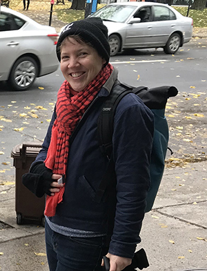

Logistics
- Friday, June 21
- 12:00 PM - 4:00 PM
- Kate Bronstad, Heather Klish, Ari Gofman
- Registration & ALA info
Contact
Please email Kate Bronstad at kate.bronstad@tufts.edu.
What is Git?

Work smarter, collaborate faster and share code or other files with the library community using the popular version control system Git. Featuring a mix of git fundamentals and hands-on exercises, participants learn the basics of Git, learn how to use key commands, and how to use GitHub to their advantage, including sharing their own work and building upon the projects of others.
Git is a tool (technically, a version control system) that allows you to easily track changes in your files, scripts, websites, or entire programs. You can run it on your own computer for your own projects, but Git also makes it easy to collaborate with others on shared projects - thus helpful to small teams, large organizations, and people coordinating on open source projects. Easier collaboration is not the only advantage to using Git: you can also easily test out changes and write new code without threatening your existing work. It is very popular – verging on a necessity – amongst coders.
GitHub is a website that allows you to easily host and manage the code for git-tracked projects. It simplifies collaboration among project contributors, and is especially helpful for open source projects where you don’t necessarily meet your fellow contributors in real life. GitHub is free if your code is open to the public. Bring your laptop for an afternoon of hands on exploration!
Who is this for?
This course is aimed at folks who are interested in developing skills in:
- collaborating & coordinating on projects with people anywhere in the world
- managing your own projects
- backing up projects
- adapting existing projects for your own use
- storing & sharing customizations for ILLiad, LibGuides, EZproxy etc
- building & hosting a free website or personal project files
You don't need to have any previous knowledge of the tools that will be presented at the workshop.
Participants should bring a laptop with a Mac, Linux, or Windows operating system (not a tablet) that they have administrative privileges on. If this is not possible for you but you are interested in attending, please contact the instructors who will try to assist. Please let the instructors know if you are planning on using a Chromebook. Participants should download the required software before the workshop. All attendees will abide by the ALA Code of Ethics.
Accessibility Information
To come with room assignment. If you have specific accessibility requirements, please let the instructors know.
Who are we?
The 3 of us all work for the libraries at Tufts University:
-
Kate Bronstad is a Web Developer for the Tufts Libraries. Kate uses git daily & has taught Git for ALA & other organizations.Pronouns: They/them, she/her
-
Ari Gofman is the Social Science Data Librarian at Tisch Library, Tufts University where they teach Git (among other things) as a certified Carpentries instructor. Their professional interests include instruction, data services, social justice, and queer young adult literature.Pronouns: They/them/theirs
-
Heather Klish is the Systems Librarian for the libraries at Tufts University.Pronouns: They/them, she/her